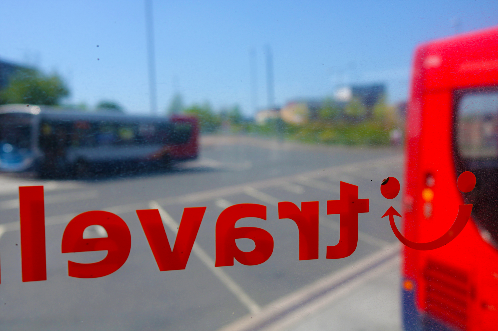
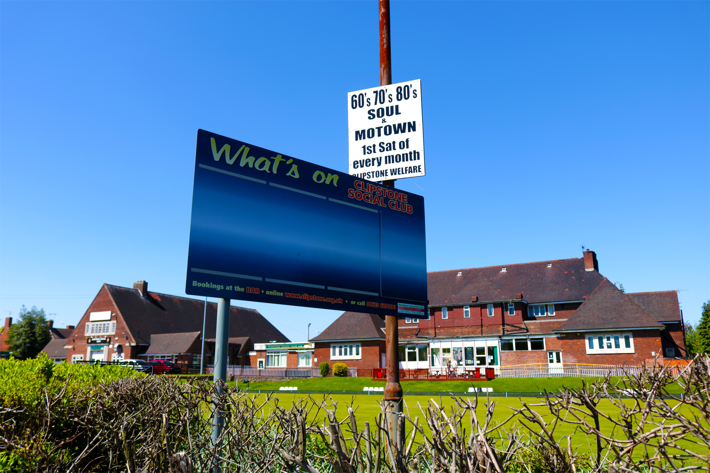
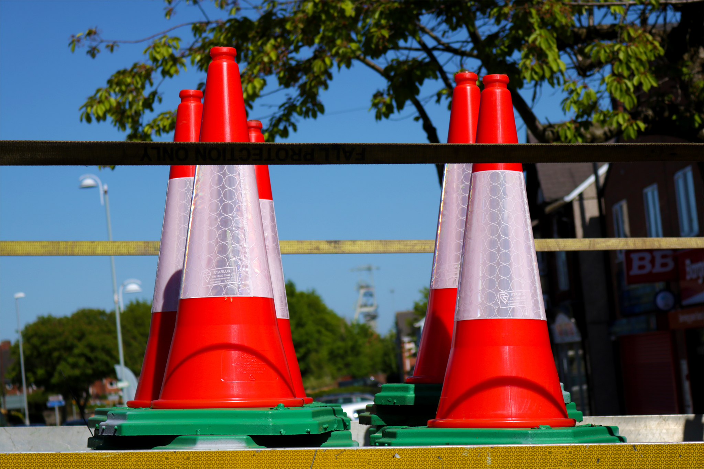
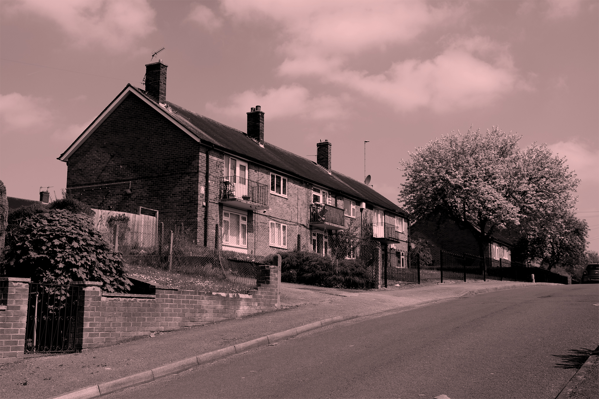
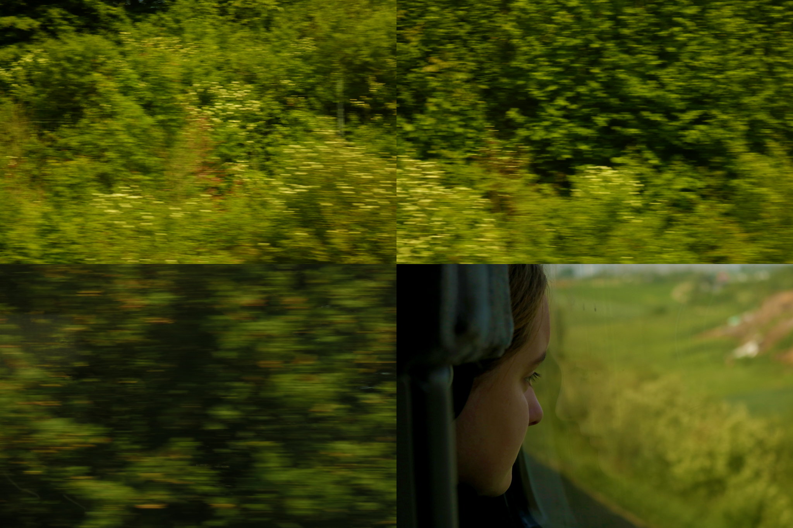
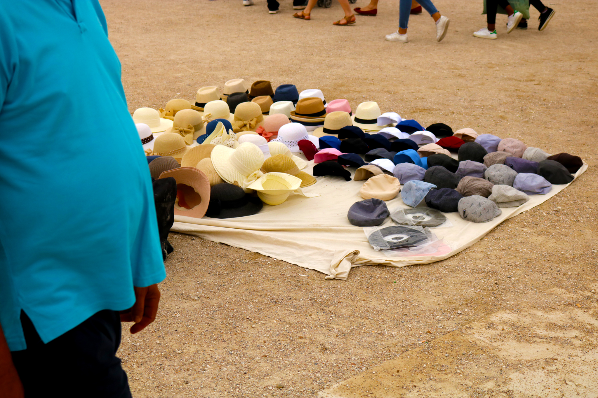
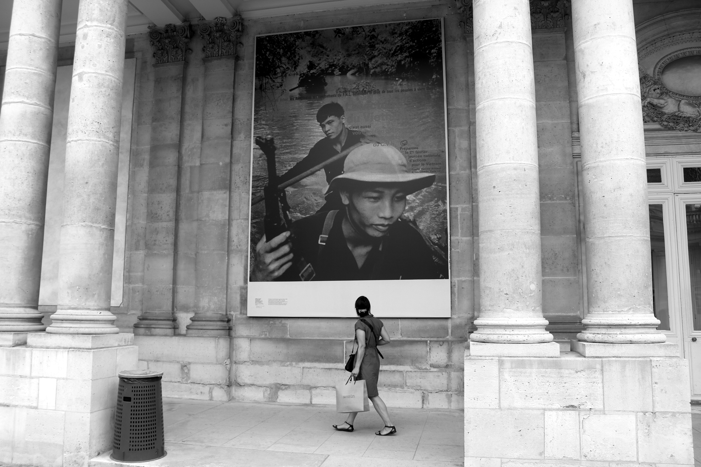
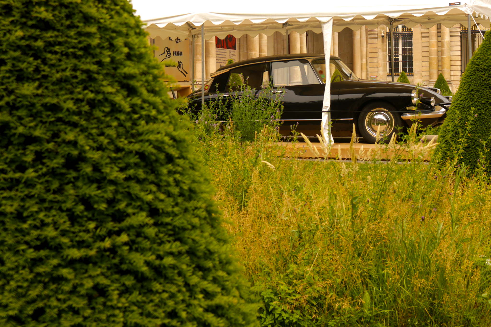
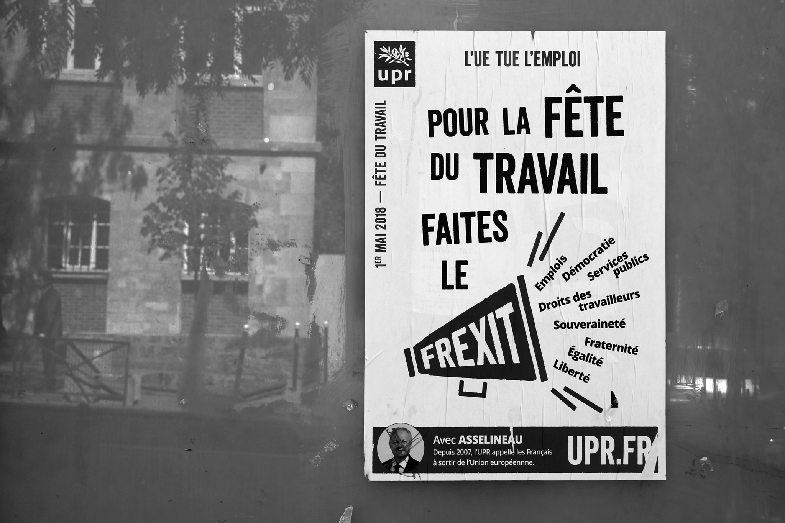
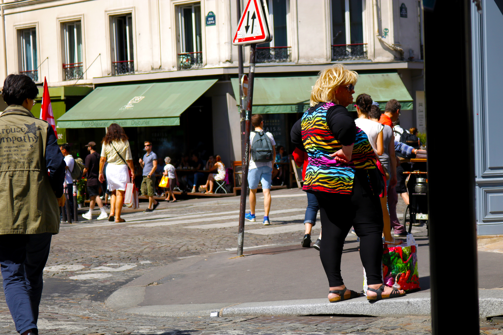

The Reconnoiterer's Symptom
Welcome to May's repository for The Reconnoiterer's Symptom, or, in the internationalist spirit of liberty, equality, fraternity: 'Le symptême du Reconnoiterer'.
This month's image sequence is entitled Brexit & Frexit. I've been exploring Nottinghamshire and Paris, resisting the temptation to write lengthy explanations for the resulting images. I'm not anti-intellectual but do feel that images speak through their viewers, and even for themselves.










The idea for TRS is to avoid the portfolio approach to photography and create, instead, a monthly repository of new images that capture the excitement of getting out and about with a camera. TRS is a place of change not stasis or the weight of 'previous work'. It's about trying to find the right place to stand and the right time to release the shutter.
When I started TRS (last month), I made a rule that I'd aim for, 'a dozen or so images each month for year to see how this feels, images that reflect a commitment to walking and looking, a kind of low level reconnaissance or mass observation strategy.' This month, I've cut it down to eleven images.
I also said that, 'social media platforms are too noisy for a quieter approach to image sequencing and the TRS repositories are an attempt to break free.' This is still the philosophy, but I've dropped the black and white only stance to making images and plan to incorporate colour from now on. The, 'no frills image and text' still stands too (with the exception of more work on the web-side of things to get screen-wide images working). I've also employed a grid and a colour tint. It seemed right! The image(s) of 'Pascal' (above) is an example of another type of sequence. Pascal appeared out of nowhere, introduced himself, and asked me to take his photograph while he stood beside the entrance sign to the 68, les archives du pouvoir exhibition outside the Archives nationales de France. I obliged. His camera was interesting to use. You held it as you would a revolver, pulling a trigger each time you took a shot. It looks as though he could be holding a gun in my images of him. It feels right to present the moment before we spoke as a short roll of images, though I feel unnerved at echoing the actions of a covert police photographer, especially as I suggested Pascal make a peace sign while posing for his photos; the use of police photographic records during the arrest, conviction, and detention of protestors is well documented within the Archives of power exhibition.
I'm still planning to host some temporary exhibitions (at some point), photos and observation strategies by other people, each exhibition a month long like the TRS repositories themselves. I've come across lots of folk like Pascal while I'm out taking photos and it's occurred to me that these encounters should form the initial contact for inviting work rather than the standard internet call for submissions.
A quick word about navigating the images. I want the sequences on TRS to echo the flexibility offered by the humble photobook where, even though there is a 'set sequence', it's possible for the viewer to explore images in relation to each other by leafing back and forth. Here, clicking a link will scroll out the related image. Clicking the link again will scroll it back. Use the scroll bar at the right of your browser to move up and down through the sequence. It's possible to open and close the images in any order or view them all together as a sequence.
Hope you enjoy Brexit & Frexit.
Jez
May '18